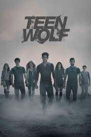
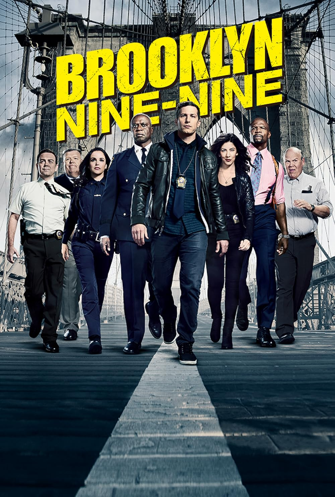

| Titulo |
Capa |
Descrição |
Temporadas |
| Supernatural |
 |
Os irmãos Sam e Dean Winchester encaram cenários sinistros caçando monstros. Velhos truques, armas e esconderijos não funcionam mais e seus amigos os traem, forçando os irmãos a contar um com o outro enquanto enfrentam novos inimigos. |
15 |
| Stranger Things |
 |
Um grupo de amigos se envolve em uma série de eventos sobrenaturais na pacata cidade de Hawkins. Eles enfrentam criaturas monstruosas, agências secretas do governo e se aventuram em dimensões paralelas.Um grupo de amigos se envolve em uma série de eventos sobrenaturais na pacata cidade de Hawkins. Eles enfrentam criaturas monstruosas, agências secretas do governo e se aventuram em dimensões paralelas. |
4 |
| Outer Banks |
 |
O jovem John convoca seus melhores amigos para procurarem por um tesouro ligado ao desaparecimento de seu pai. Aos poucos, o grupo vai entrando em uma perigosa trama de segredos e perigos. |
3 |
| The Vampire Diaries |
 |
Alguns meses depois que seus pais são mortos em um trágico acidente de carro, Elena Gilbert e seu irmão Jeremy tentam aplacar sua dor. Para Elena, que sempre foi popular e envolvida com a escola e amigos, é uma luta esconder sua tristeza do mundo. Ela se vê atraída por um novo estudante bonitão e misterioso, Stefan, sem saber que o jovem é um vampiro centenário fazendo o melhor para viver em paz entre os humanos. Seu irmão Damon, porém, é o típico estereótipo de vampiro, incluindo a violência e a brutalidade. Os irmãos travam uma guerra pelas almas de Elena e de todos na pequena cidade do estado da Virginia. Baseado na série de livros de by L.J. Smith. |
8 |
| Pretty Little Liars |
|
Depois do desaparecimento de Alison, as adolescentes Spencer, Aria, Hanna e Emily, agora no ensino médio, têm um novo desafio: desvendar mensagens anônimas ameaçando contar seus segredos. |
7 |
| Teen Wolf |
 |
O anonimato de colégio do qual Scott McCall estava tentando se livrar não poderia ter acontecido de uma forma mais misteriosa e complicada. Enquanto caminhava pela floresta uma noite, Scott encontrou uma criatura, levou uma mordida e teve sua vida mudada para sempre. Ele é humano ou um lobisomem? Ou um pouco dos dois? Controlar as estranhas necessidades que agora sente é a parte mais dura, e o jovem teme que os impulsos é que acabarão controlando-o. Será que a mordida foi uma bênção ou uma maldição, especialmente em relação à maliciosa Allison, de quem Scott nunca se cansa? |
6 |
| Friends |
 |
Seis amigos, três homens e três mulheres, enfrentam a vida e os amores em Nova York e adoram passar o tempo livre na cafeteria Central Perk. |
10 |
| Gossip Girl |
 |
O colegial acabou para os privilegiados ex-estudantes de uma escola preparatória exclusiva do Upper East Side de Manhattan, mas a "Gossip Girl" ainda compartilha mensagens de texto sobre escândalos e corações partidos. Enquanto os formandos embarcam rumo ao futuro, com alguns entrando para a faculdade e outros se concentrando nas carreiras em ascensão, a "Gossip Girl" continua a colocar lenha na fogueira e a alimentar qualquer escândalo em potencial. Ainda assim, sua identidade permanece um mistério. Dos produtores executivos Josh Schwartz, Stephanie Savage, Leslie Morgenstein, Bob Levy e Joshua Safran. |
6 |
| The Walking Dead |
 |
Baseado na história em quadrinhos escrita por Robert Kirkman, este drama potente e visceral retrata a vida nos Estados Unidos pós-apocalíptico. Um grupo de sobreviventes, liderado pelo policial Rick Grimes, segue viajando em busca de uma nova moradia segura e distante dos mortos-vivos. A pressão para permanecerem vivos e lutarem pela sobrevivência faz com que muitos do grupo sejam submetidos às mais profundas formas de crueldade humana. Rick acaba descobrindo que o tão assustador desespero pela subsistência pode ser ainda mais fatal do que os próprios mortos-vivos que os rodeiam. |
11 |
| Brooklyn 99 |
 |
Jake Peralta é um detetive brilhante e ao mesmo tempo imaturo, que nunca precisou se preocupar em respeitar as regras. Tudo muda quando um capitão exigente assume o comando de seu esquadrão e Jake deve aprender a trabalhar em equipe. |
8 |